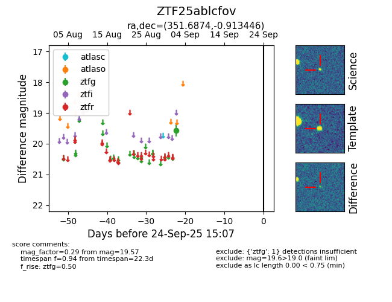

FINK: ZTF25ablcfov
Lasair: ZTF25ablcfov
ALeRCE: ZTF25ablcfov
ZTF25ablcfov (ztf,fink)
equatorial (ra, dec) = (351.6874,-0.91345)
galactic (l, b) = (81.6252,-56.83279)

last ztfg=19.57
1 ztfg detections